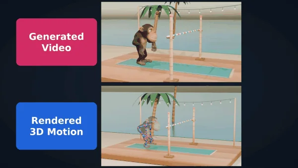

Joints, Camera, Action! Co-Generating 3D Motion and Video for Arbitrary Rigs
Abstract for Joints, Camera, Action! Co-Generating 3D Motion and Video for Arbitrary Rigs
Video generation models can now depict remarkably realistic motion. Yet it is unclear how to use this motion beyond pixels: to animate a specific 3D asset and replay the animation in its 3D scene. For instance, a video model can show a monkey jumping over a crossbar, but it cannot return that jump as replayable 3D motion placed in the 3D scene. Here we present a model that directly co-generates the video and 3D motion for any supplied rig, along with a camera that registers this motion to the scene. Prior video–motion models either handle only human skeletons, often adding billions of parameters, or triangulate 3D motion from generated 2D pose maps. We instead keep 3D motion in a separate model that supports arbitrary skeletons, and connect it to a pretrained video model through a small set of cross-attention layers. This separation lets the motion model first learn how skeletons move from motion-only data, which is easier to obtain and augment than paired video. Additionally, our model learns to locate each joint in the video frames, which lets us recover the camera and place the 3D motion in the scene. To train across many skeletons, we use a generative video editor to place animated 3D assets in scenes suited to their actions, curating the edits so their known motion remains valid. Together with human and robot video, this yields nearly 200K training pairs. Our evaluations demonstrate that our model animates diverse rigs from text more faithfully than video-first pipelines, and its motion responds to the surrounding scene. It also turns video into rig motion, rig motion into video, and enables keyframe-based control of the 3D motion.